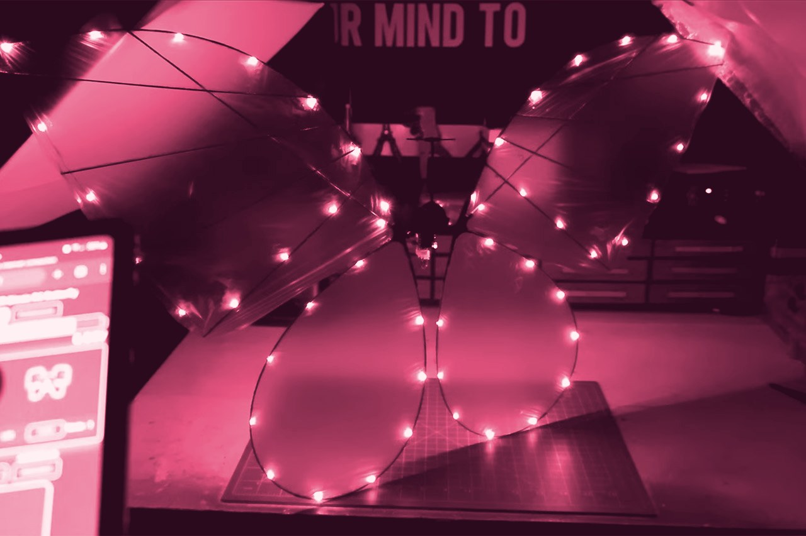
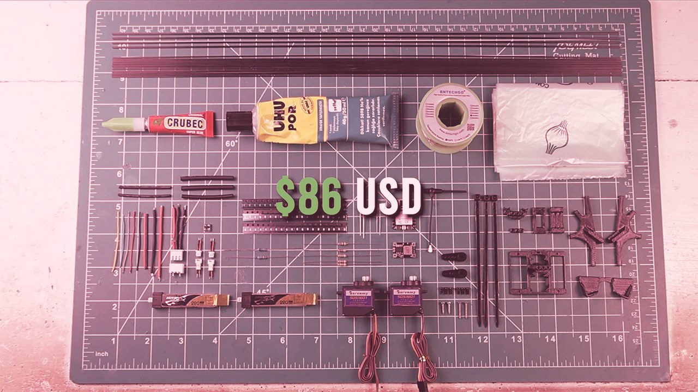

💌 A note from Hans
Hey! I found this tiny butterfly that actually flies. It flaps its wings like the real thing, and it glows at night. I've been wanting to build one, and the frame is the only part I can't make myself, because I don't have a printer.
It's a really small print, and I'd bring everything else: the electronics, the battery, the wings. If you're up for it, I'd really appreciate it, and I'll send you the video when it flies. No rush at all, whenever your printer is free. 💖
🦋What is it?
A little robot butterfly with real flapping wings. No propellers, just two wings beating like the real thing. It weighs less than a chocolate bar, it flies off your phone, and its wings light up at night.

🖨️The ask: print the frame
The frame is the only part I can't make without a printer. It's small, light, and quick.
Hard bits: PETG
The body, the little servo mounts, the brackets. Prints normally through the AMS.
💗 Bendy bits: soft TPU 95A
Tiny flexible guards and hinges that protect the servos if it crashes. Just a few grams.
All together it's 30–60 grams of plastic. Everything fits your printer's bed easily. The wings aren't printed at all: I make those myself from a produce bag and carbon rods.
💾 Download the files (STL + STEP)The files are also on Max's Cults3D page, linked from the video below.

🧵What you'll need
Just two spools. If you already have them, this costs a few dollars of plastic.
PETG · ~$25–30 a spool
The frame. Only a few dozen grams get used.
TPU 95A · ~$25–30 a spool
The bendy bits. Only a few grams get used.
And please don't swap the bendy bits to PLA. PLA hinges snap on the very first flap. (Max's own warning!)
⚙️Print settings
Straight from Max's own project file. Just copy these in.
- Layer height0.16 mm
- Walls2 loops
- Infill15% rectilinear
- SeamAligned
- SupportsOff, none needed
- Prime tower / flushingOff
Temperatures: your usual PETG / TPU 95A profiles are perfect.

✈️Then what happens
- You print
One short session, whenever your printer is free. A weekend print is perfect.
- I collect & build
I pick up the parts, solder everything, and put it together. I bring all the electronics, the battery, and the wings.
- It flies
First flight indoors, calm air, phone in hand, and I'll film it for you. 💖
🔗Everything in one place
- 🎥 The build tutorial (52 min)“Make an ESP32 RC Bionic Butterfly That Flies”. The video description has every link, including Cults3D.
- 📁 Project files (Google Drive)Gerbers, diagrams, wing templates, and the 3D files too.
- 💻 Firmware + flashing guideMax's code, free for personal builds.
- 📖 My build guideParts list, steps, and gotchas.
Print the frame, and a butterfly flies. 🦋
Thank you. A 70-gram butterfly that flies on two servos and a phone is only possible because the frame exists, and the frame only exists if someone prints it.
Hans · November 2026